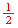
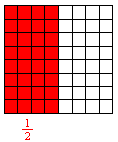
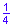
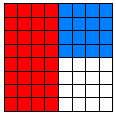
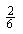
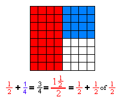
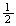
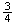
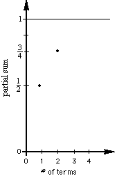

Start with the 8x8 square on graph paper, like that at left, and call it one
cake (1). Share the cake between 2 people and color in just your share. What
part of the cake is this?
Yes,  (I
read this as one-twoth, then one-threeth, and one-fourth, etc. When we say
one-half, this doesn't tells how many people are sharing the cake. This is
important for young people.)
There are lots of ways to color this in, we'll do it this way:
Notice, we'll color in the part of the cake, then write the fraction in the
same color.
Now color in ofwith
a different color, and add it on to the first piece (don't overlap the first
one).
What size piece is this new one? How many of these make the whole cake? So the
blue piece is 
of the cake.
Your picture will look something like this:
Now add .
If you say ,
I would draw a picture of a cake, cut it into 6 equal pieces, then ask if the
is bigger or smaller than .
is smaller so
it can't be what we are looking for. If you look at the picture carefully, we
get 
Are the pieces we're adding getting bigger or smaller? Are the partial sums ,
and  getting
bigger or smaller or staying the same?
Now we'll graph the partial sums vs the number of terms. The first two are shown at the right.
Now take ofof
or of
then color it in, get the name of this piece, add the first three fractions,
then graph the partial sum. Continue this process to get the next three.
Find patterns in the fractions added.
Find patterns in the partial sums.
Find patterns in the graph of the partial sums.
If we keep taking one-twoth of each piece and adding it, forever, what's
going to happen? Will the partial sum ever get to 2? 1? What's the smallest
number that will be too big? (Will the 8 by 8 square ever get filled in?) Can
you generalize the partial sum?
3. Try more of these infinite series, then try to generalize to  = ? Don's videotape #1 shows Jonathan, at age 7, doing this.
= ? Don's videotape #1 shows Jonathan, at age 7, doing this.
4. Write a program on a calculator or computer to get the infinite series.